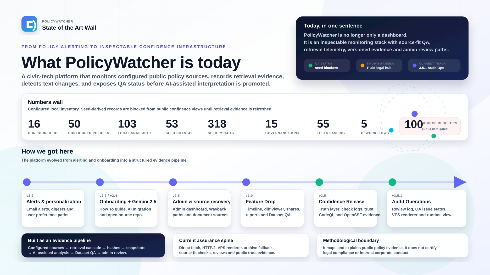

PolicyWatcher Today Wall
What it is today, how it got here, and the numbers behind the 3.5 Confidence track.

Inventory numbers are local release metrics. Public confidence views stay gated until source-verified retrieval logs replace seeded records.